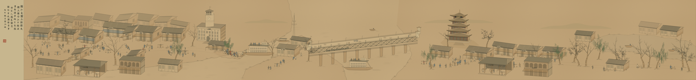
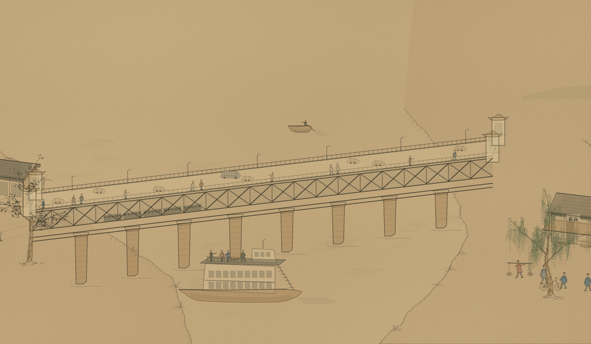
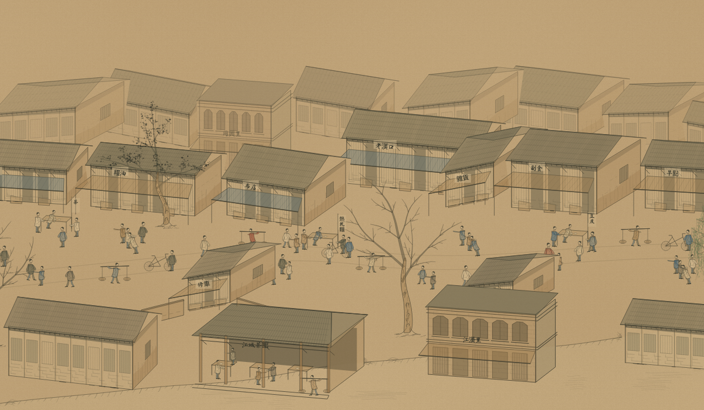

循环怎样改变画面
Claude 执行 + Codex MCP 盲评 · 11 个评审版本中的四个阶段 · 同一大桥视口
v1 · 首稿首次盲评前的完整候选v4 · 连续街屋与动作组开始改写人物关系和街道构造v7 · 舟桥与建筑深化桥腹、船体与街屋继续调整v11 · 最终稿桥头堡接岸、人物动作与水纹重画
每轮反馈对应下一版程序的修改。变化包括构图疏密、遮挡、形体及人物关系。
首稿与最终稿 · 全卷
左右滚动看细节；切换时保留卷轴位置
同一题材，两次运行
全卷按相同显示宽度展示；下方展示各自的大桥与街市片段。
Claude 执行 + Codex MCP 盲评v11 · 11 轮盲评 · 跨模型配置
Codex 执行 + Codex 独立上下文盲评R13 · 13 轮盲评 · 同模型家族配置
Claude + Codex · 大桥Codex + Codex · 大桥
Claude + Codex · 户部巷街市Codex + Codex · 汉口街市
两次独立运行的实例比较：执行模型、初稿、轮数与人工介入不同，尚无控制这些条件的配对实验。图像来自各自的最终版本。
观察与记录范围
这两次运行中，Claude 执行、Codex MCP 审阅的成卷在街市连续性、人物群组和舟桥层次上更丰富；Codex 执行版仍有整齐重复的建筑体块和平面感。这是对上述作品的视觉判断。
武汉主线的 B2–B11 在同一评审模型下从 4.5 升至 7.0，期间两次持平。分数记录了评审的判断方向；两次武汉运行均未获盲评通过。
千里江山图 · 工序回放 · 千里江山图演进 · Figure 1 · 构建回放与 SVG 导出